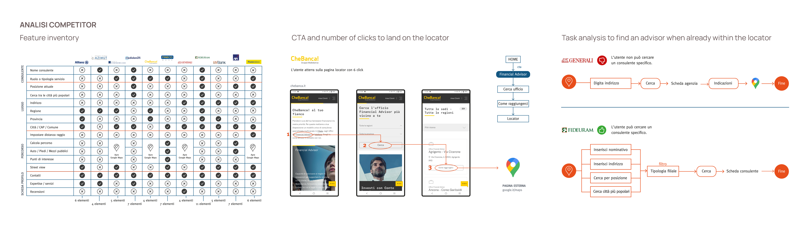

BANK***
Connecting with a financial advisor in one click
A leading Italian wealth management company needs to create a touchpoints to enable direct contact between potential clients and financial advisors.
Objective: Turn the website into the first point of contact with an advisor, with a locator that lets people find and reach the right professional in one click.
Role: End-to-end Product Designer (UX/UI).
Timeline: 2 months.

BUSINESS PROBLEM
| The problem nobody owned
The company had hundreds of advisors across the country,
and almost no way for a potential client to reach one.
If you wanted a name,
you had to walk into a branch, call customer service, or open Google Maps,
where the company's competitors showed up right next to it.
Every lost search was a lead that never started. Every call for a list
was a support agent doing a job the website should have done.
SOLUTION & RESULTS
| Customer service requests reduced by 35%
A locator built into the company's own site, where anyone can find and contact the nearest financial advisor in one click.
In the 6 months after launch, customer support requests about advisors in the territory dropped by 35%.
"Search advisors" in the main navigation
A direct entry point to the locator, so nobody has to go looking on Maps, where competitors show up right next to the company.
Users stay on the site
Potential clients complete the whole search on the platform, with Street View built in. Google Maps only comes in for "Directions", once they have already chosen an advisor.
Only what could last
Research asked for more, but I focused the first release on what the team could build and maintain. I'll tell you why further down.

| What I started with
I was the only designer on a team of four: a project manager, two developers and me.
Six weeks and a dedicated budget to answer one question:
What do people actually need to choose an advisor?
COMPETITIVE ANALYSIS
| What the market showed me
I benchmarked with mixed methods 13 companies, split into direct competitors, indirect ones
and comparables from other industries.
I noticed two patterns repeated:
- Some made the locator easy to reach (1 to 2 clicks) but it was only a map of branches with a generic pin: no people, no way to contact anyone.
- Others hid it behind 6+ clicks, under a "contact an advisor" menu that was just a long list of names.

USER RESEARCH
| What users told me
I surveyed 120 Italians on a profiled premium target aged 35 to 70 who already invest through an advisor.
The answers changed the brief:
- Only 25% start with a locator. Most ask their bank or someone they know.
- 58% say doubt about the advisor's reliability is the main barrier.
- 72% want to read a profile card first: expertise and reviews.
- 74% use Google Maps even when the site has its own locator.
They were looking for someone they could trust, and proximity was the last thing on their mind.

CONSTRAINS & DESIGN DECISIONS
| The plan and where it broke
Research gave me three levers for building trust: advisor profile cards, reviews, and location photos.
I designed around them, then delivery got in the way.
But the advisor network was large but its data was not structured,
there was no consistent content for cards and reviews and the team had limited capacity to maintain it.
A beautiful profile card with half its fields empty would have damaged trust instead of building it.
So the question shifts in "How fast can we put the client in touch with them?"
I removed filters, cards and reviews from the first release and focused on two things:
a locator reachable in one click on desktop and two on mobile and a contact flow that works the moment
a user finds the right person.
WIREFRAMES

DESIGN SYSTEM
| What I added to the existing system
The client already had a design system, so I didn't start from zero, I extended it.
The new components were designed to scale to other touchpoints:
- Full-width map
- Dedicated buttons and icons
- Collapsible results list, with closed and expanded states
- Responsive contacts modal

FINAL CONSIDERATION
| What comes next
Research showed that profile cards, reviews and photos could increase trust in the choice.
Excluded from the first release because advisor network data wasn't yet structured and consistent enough.
The next iteration can build on top of this foundation.